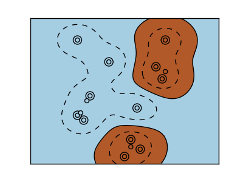
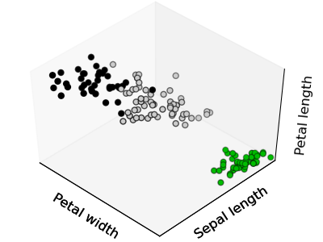
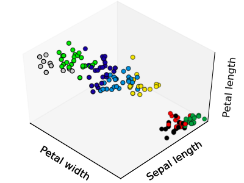

3.6. scikit-learn: machine learning in Python¶
Authors: Fabian Pedregosa, Gael Varoquaux
Prerequisites
- Numpy, Scipy
- IPython
- matplotlib
- scikit-learn (http://scikit-learn.org)
Chapters contents
3.6.1. Loading an example dataset¶

First we will load some data to play with. The data we will use is a very simple flower database known as the Iris dataset.
We have 150 observations of the iris flower specifying some measurements: sepal length, sepal width, petal length and petal width together with its subtype: Iris setosa, Iris versicolor, Iris virginica.
To load the dataset into a Python object:
>>> from sklearn import datasets
>>> iris = datasets.load_iris()
This data is stored in the .data member, which
is a (n_samples, n_features) array.
>>> iris.data.shape
(150, 4)
The class of each observation is stored in the .target attribute of the
dataset. This is an integer 1D array of length n_samples:
>>> iris.target.shape
(150,)
>>> import numpy as np
>>> np.unique(iris.target)
array([0, 1, 2])
An example of reshaping data: the digits dataset

The digits dataset consists of 1797 images, where each one is an 8x8 pixel image representing a hand-written digit:
>>> digits = datasets.load_digits()
>>> digits.images.shape
(1797, 8, 8)
>>> import pylab as pl
>>> pl.imshow(digits.images[0], cmap=pl.cm.gray_r)
<matplotlib.image.AxesImage object at ...>
To use this dataset with the scikit, we transform each 8x8 image into a vector of length 64:
>>> data = digits.images.reshape((digits.images.shape[0], -1))
3.6.1.1. Learning and Predicting¶
Now that we’ve got some data, we would like to learn from it and
predict on new one. In scikit-learn, we learn from existing
data by creating an estimator and calling its fit(X, Y) method.
>>> from sklearn import svm
>>> clf = svm.LinearSVC()
>>> clf.fit(iris.data, iris.target) # learn from the data
LinearSVC(...)
Once we have learned from the data, we can use our model to predict the most likely outcome on unseen data:
>>> clf.predict([[ 5.0, 3.6, 1.3, 0.25]])
array([0])
Note
We can access the parameters of the model via its attributes ending with an underscore:
>>> clf.coef_
array([[ 0...]])
3.6.2. Classification¶
3.6.2.1. k-Nearest neighbors classifier¶
The simplest possible classifier is the nearest neighbor: given a new observation, take the label of the training samples closest to it in n-dimensional space, where n is the number of features in each sample.

The k-nearest neighbors classifier internally uses an algorithm based on ball trees to represent the samples it is trained on.
KNN (k-nearest neighbors) classification example:
>>> # Create and fit a nearest-neighbor classifier
>>> from sklearn import neighbors
>>> knn = neighbors.KNeighborsClassifier()
>>> knn.fit(iris.data, iris.target)
KNeighborsClassifier(...)
>>> knn.predict([[0.1, 0.2, 0.3, 0.4]])
array([0])
Training set and testing set
When experimenting with learning algorithms, it is important not to test the prediction of an estimator on the data used to fit the estimator. Indeed, with the kNN estimator, we would always get perfect prediction on the training set.
>>> perm = np.random.permutation(iris.target.size)
>>> iris.data = iris.data[perm]
>>> iris.target = iris.target[perm]
>>> knn.fit(iris.data[:100], iris.target[:100])
KNeighborsClassifier(...)
>>> knn.score(iris.data[100:], iris.target[100:])
0.95999...
Bonus question: why did we use a random permutation?
3.6.2.2. Support vector machines (SVMs) for classification¶
3.6.2.2.1. Linear Support Vector Machines¶
SVMs try to construct a hyperplane maximizing the margin between the two classes. It selects a subset of the input, called the support vectors, which are the observations closest to the separating hyperplane.

>>> from sklearn import svm
>>> svc = svm.SVC(kernel='linear')
>>> svc.fit(iris.data, iris.target)
SVC(...)
There are several support vector machine implementations in scikit-learn.
The most commonly used ones are svm.SVC, svm.NuSVC and svm.LinearSVC;
“SVC” stands for Support Vector Classifier (there also exist SVMs for regression,
which are called “SVR” in scikit-learn).
Exercise
Train an svm.SVC on the digits dataset. Leave out the
last 10%, and test prediction performance on these observations.
3.6.2.2.2. Using kernels¶
Classes are not always separable by a hyperplane, so it would be desirable to have a decision function that is not linear but that may be for instance polynomial or exponential:
| Linear kernel | Polynomial kernel | RBF kernel (Radial Basis Function) |
 |
 |
 |
>>> svc = svm.SVC(kernel='linear')
|
>>> svc = svm.SVC(kernel='poly',
... degree=3)
>>> # degree: polynomial degree
|
>>> svc = svm.SVC(kernel='rbf')
>>> # gamma: inverse of size of
>>> # radial kernel
|
{kind=link}
Exercise
Which of the kernels noted above has a better prediction performance on the digits dataset?
3.6.3. Clustering: grouping observations together¶
Given the iris dataset, if we knew that there were 3 types of iris, but did not have access to their labels, we could try unsupervised learning: we could cluster the observations into several groups by some criterion.
3.6.3.1. K-means clustering¶
The simplest clustering algorithm is k-means. This divides a set into
k clusters, assigning each observation to a cluster so as to minimize
the distance of that observation (in n-dimensional space) to the cluster’s
mean; the means are then recomputed. This operation is run iteratively until
the clusters converge, for a maximum for max_iter rounds.
(An alternative implementation of k-means is available in SciPy’s cluster
package. The scikit-learn implementation differs from that by offering an
object API and several additional features, including smart initialization.)
>>> from sklearn import cluster, datasets
>>> iris = datasets.load_iris()
>>> k_means = cluster.KMeans(n_clusters=3)
>>> k_means.fit(iris.data)
KMeans(...)
>>> print(k_means.labels_[::10])
[1 1 1 1 1 0 0 0 0 0 2 2 2 2 2]
>>> print(iris.target[::10])
[0 0 0 0 0 1 1 1 1 1 2 2 2 2 2]
 |
 |  |
| Ground truth | K-means (3 clusters) | K-means (8 clusters) |
{kind=link}
{kind=link}
Application to Image Compression
Clustering can be seen as a way of choosing a small number of information from the observations (like a projection on a smaller space). For instance, this can be used to posterize an image (conversion of a continuous gradation of tone to several regions of fewer tones):
>>> from scipy import misc
>>> face = misc.face(gray=True).astype(np.float32)
>>> X = face.reshape((-1, 1)) # We need an (n_sample, n_feature) array
>>> K = k_means = cluster.KMeans(n_clusters=5) # 5 clusters
>>> k_means.fit(X)
KMeans(...)
>>> values = k_means.cluster_centers_.squeeze()
>>> labels = k_means.labels_
>>> face_compressed = np.choose(labels, values)
>>> face_compressed.shape = face.shape
| Raw image | K-means quantization (K=5) |
{kind=link}
{kind=link}
3.6.4. Dimension Reduction with Principal Component Analysis¶


The cloud of points spanned by the observations above is very flat in one direction, so that one feature can almost be exactly computed using the 2 other. PCA finds the directions in which the data is not flat and it can reduce the dimensionality of the data by projecting on a subspace.
Warning
Depending on your version of scikit-learn PCA will be in module
decomposition or pca.
>>> from sklearn import decomposition
>>> pca = decomposition.PCA(n_components=2)
>>> pca.fit(iris.data)
PCA(copy=True, n_components=2, whiten=False)
>>> X = pca.transform(iris.data)
Now we can visualize the (transformed) iris dataset:
>>> import pylab as pl
>>> pl.scatter(X[:, 0], X[:, 1], c=iris.target)
<matplotlib.collections...Collection object at ...>

PCA is not just useful for visualization of high dimensional datasets. It can also be used as a preprocessing step to help speed up supervised methods that are not efficient with high dimensions.
3.6.5. Putting it all together: face recognition¶
An example showcasing face recognition using Principal Component Analysis for dimension reduction and Support Vector Machines for classification.

Stripped-down version of the face recognition example:
import numpy as np
import pylab as pl
from sklearn import cross_val, datasets, decomposition, svm
# ..
# .. load data ..
lfw_people = datasets.fetch_lfw_people(min_faces_per_person=70, resize=0.4)
perm = np.random.permutation(lfw_people.target.size)
lfw_people.data = lfw_people.data[perm]
lfw_people.target = lfw_people.target[perm]
faces = np.reshape(lfw_people.data, (lfw_people.target.shape[0], -1))
train, test = iter(cross_val.StratifiedKFold(lfw_people.target, k=4)).next()
X_train, X_test = faces[train], faces[test]
y_train, y_test = lfw_people.target[train], lfw_people.target[test]
# ..
# .. dimension reduction ..
pca = decomposition.RandomizedPCA(n_components=150, whiten=True)
pca.fit(X_train)
X_train_pca = pca.transform(X_train)
X_test_pca = pca.transform(X_test)
# ..
# .. classification ..
clf = svm.SVC(C=5., gamma=0.001)
clf.fit(X_train_pca, y_train)
# ..
# .. predict on new images ..
for i in range(10):
print(lfw_people.target_names[clf.predict(X_test_pca[i])[0]])
_ = pl.imshow(X_test[i].reshape(50, 37), cmap=pl.cm.gray)
_ = raw_input()
Full code: faces.py
3.6.6. Linear model: from regression to sparsity¶
Diabetes dataset
The diabetes dataset consists of 10 physiological variables (age, sex, weight, blood pressure) measure on 442 patients, and an indication of disease progression after one year:
>>> diabetes = datasets.load_diabetes()
>>> diabetes_X_train = diabetes.data[:-20]
>>> diabetes_X_test = diabetes.data[-20:]
>>> diabetes_y_train = diabetes.target[:-20]
>>> diabetes_y_test = diabetes.target[-20:]
The task at hand is to predict disease prediction from physiological variables.
3.6.6.1. Sparse models¶
To improve the conditioning of the problem (uninformative variables, mitigate the curse of dimensionality, as a feature selection preprocessing, etc.), it would be interesting to select only the informative features and set non-informative ones to 0. This penalization approach, called Lasso, can set some coefficients to zero. Such methods are called sparse method, and sparsity can be seen as an application of Occam’s razor: prefer simpler models to complex ones.
>>> from sklearn import linear_model
>>> regr = linear_model.Lasso(alpha=.3)
>>> regr.fit(diabetes_X_train, diabetes_y_train)
Lasso(...)
>>> regr.coef_ # very sparse coefficients
array([ 0. , -0. , 497.34075682, 199.17441034,
-0. , -0. , -118.89291545, 0. ,
430.9379595 , 0. ])
>>> regr.score(diabetes_X_test, diabetes_y_test)
0.5510835453...
being the score very similar to linear regression (Least Squares):
>>> lin = linear_model.LinearRegression()
>>> lin.fit(diabetes_X_train, diabetes_y_train)
LinearRegression(...)
>>> lin.score(diabetes_X_test, diabetes_y_test)
0.5850753022...
Different algorithms for a same problem
Different algorithms can be used to solve the same mathematical problem. For instance the Lasso object in the sklearn solves the lasso regression using a coordinate descent method, that is efficient on large datasets. However, the sklearn also provides the LassoLARS object, using the LARS which is very efficient for problems in which the weight vector estimated is very sparse, that is problems with very few observations.
3.6.7. Model selection: choosing estimators and their parameters¶
3.6.7.1. Grid-search and cross-validated estimators¶
3.6.7.1.1. Grid-search¶
The scikit-learn provides an object that, given data, computes the score during the fit of an estimator on a parameter grid and chooses the parameters to maximize the cross-validation score. This object takes an estimator during the construction and exposes an estimator API:
>>> from sklearn import svm, grid_search
>>> gammas = np.logspace(-6, -1, 10)
>>> svc = svm.SVC()
>>> clf = grid_search.GridSearchCV(estimator=svc, param_grid=dict(gamma=gammas),
... n_jobs=-1)
>>> clf.fit(digits.data[:1000], digits.target[:1000])
GridSearchCV(cv=None,...)
>>> clf.best_score_
0.9...
>>> clf.best_estimator_.gamma
0.00059948425031894088
By default the GridSearchCV uses a 3-fold cross-validation. However, if it detects that a classifier is passed, rather than a regressor, it uses a stratified 3-fold.
3.6.7.1.2. Cross-validated estimators¶
Cross-validation to set a parameter can be done more efficiently on an algorithm-by-algorithm basis. This is why, for certain estimators, the scikit-learn exposes “CV” estimators, that set their parameter automatically by cross-validation:
>>> from sklearn import linear_model, datasets
>>> lasso = linear_model.LassoCV()
>>> diabetes = datasets.load_diabetes()
>>> X_diabetes = diabetes.data
>>> y_diabetes = diabetes.target
>>> lasso.fit(X_diabetes, y_diabetes)
LassoCV(alphas=None, ...)
>>> # The estimator chose automatically its lambda:
>>> lasso.alpha_
0.012...
These estimators are called similarly to their counterparts, with ‘CV’ appended to their name.
Exercise
On the diabetes dataset, find the optimal regularization parameter alpha.